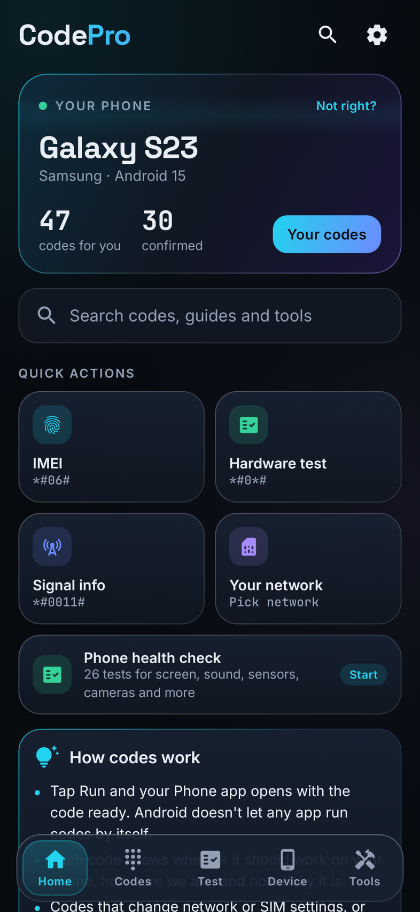
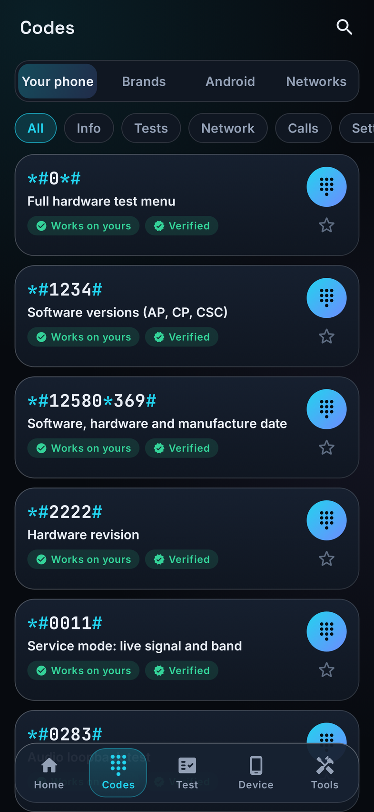
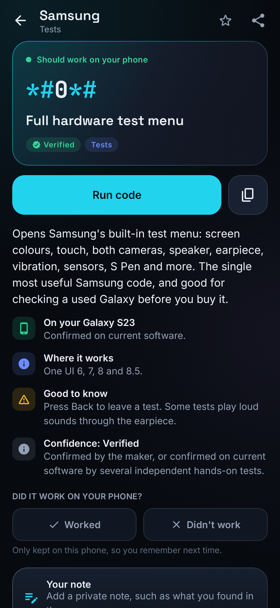
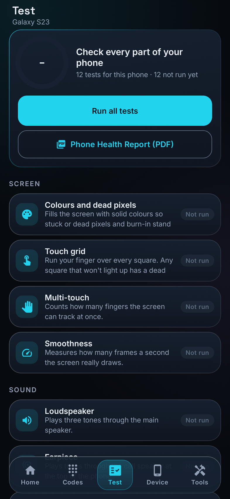
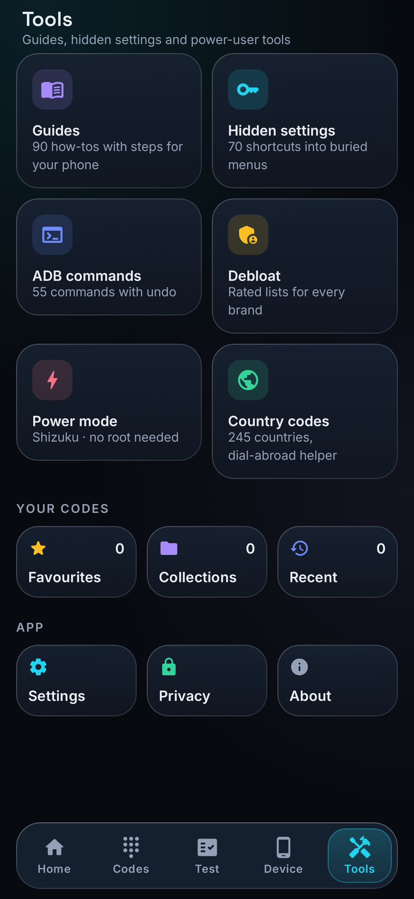
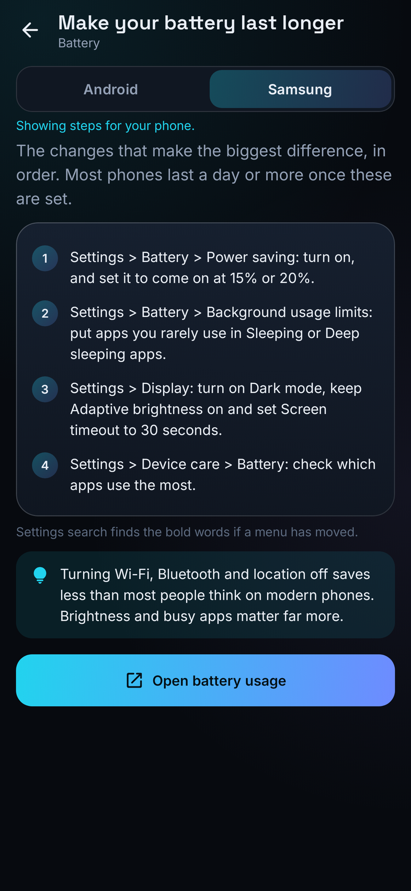
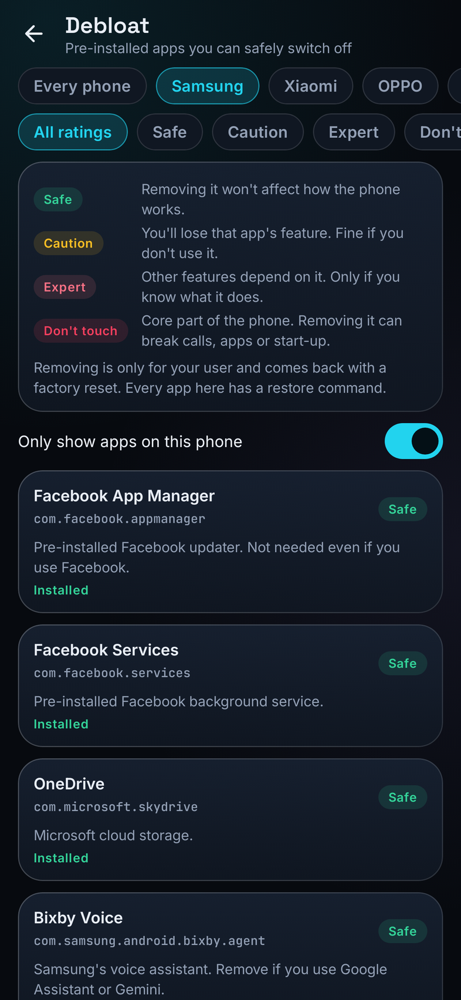
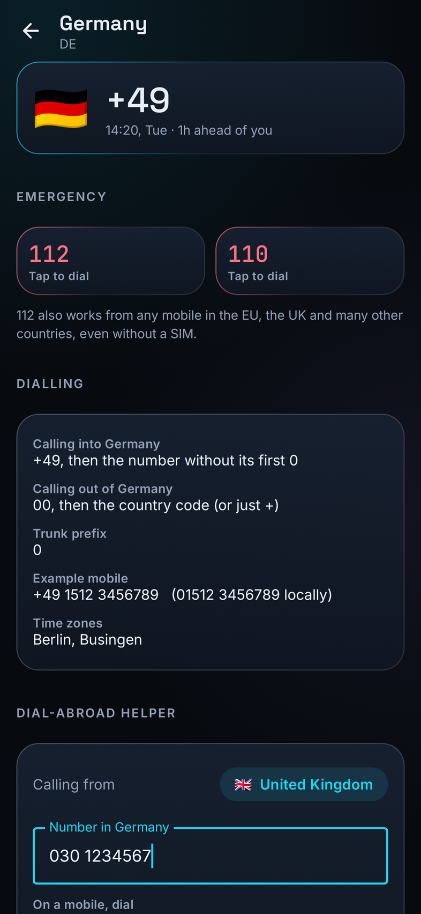
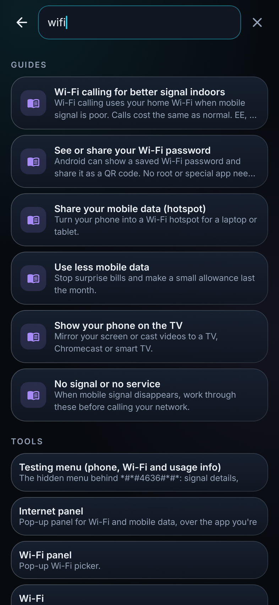
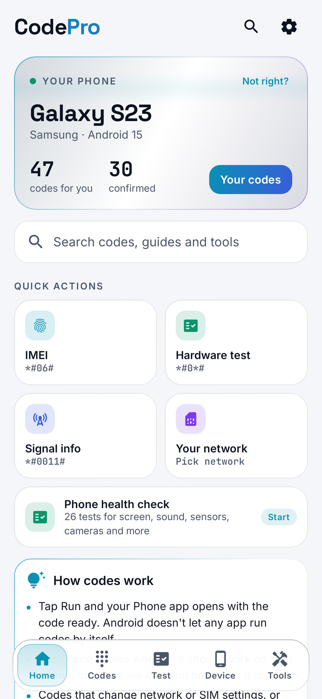

Every hidden code for your phone, checked for your model.
CodePro knows the secret dialer codes for Samsung, Google Pixel, Xiaomi, OnePlus, OPPO, realme, Motorola, vivo and seven more makers, plus the balance and switching codes for 26 mobile networks. Each one says in plain English what it does, whether it should work on your phone, and how risky it is.
It also tests every part of your phone and writes a Phone Health Report, explains 90 settings and fixes, and opens hidden settings in one tap. CodePro has no internet access, so nothing about your phone can ever leave it.
Download for AndroidHow to install
- Version 1.0.0
- Android 10 or later
- 5.7 MB
Free, with nothing to unlock. No adverts, no account with the developer, no tracking. Compare or read the release notes.
Chrome may say the file might be harmful. It shows this for app files that do not come from Google Play. Choose Download anyway.

- No internet accessCodePro cannot go online at all.
- No advertsNone in the app and none on this site.
- Nothing to buyEvery feature is free, with nothing locked.
- No accountNothing to sign up for.
A look inside
These are the real screens, drawn from the app's own code on a Galaxy S23 profile. Swipe or scroll sideways to see them all.









How it works
Android does not let any app run a dialer code by itself, so CodePro does the next best thing, and tells you exactly what will happen first.
Find your code
CodePro works out your phone's maker, model, software and network, and puts the codes made for it first.
Read before you run
Every code says what it does, how sure we are it works, and how risky it is. Codes that change settings are hidden until you switch on Advanced mode.
Run it
Tap Run and your own Phone app opens with the code ready. You tap the last key or press call. CodePro never dials anything by itself.
Everything is in, and all of it is free
Nothing below is held back for a paid tier, because there is no paid tier.
The codes
- 15 phone makers
- Samsung, Google Pixel, Xiaomi, OnePlus, OPPO, realme, Motorola, vivo, Sony, Nokia, Huawei, Honor, Nothing, LG and Lava, plus every standard Android code.
- Checked for your phone
- Each code is marked Should work, May work, Older software only or Not for your phone, with the reason.
- Rated for safety
- Safe, Caution, High risk or Wipes data. Risky codes stay hidden until you ask for them and need a press and hold.
- 26 mobile networks
- Balance, allowance, PAC and help codes for every main UK network, plus US, Irish, German, French, Spanish and Italian networks.
Test your phone
- 26 hardware tests
- Screen colours, touch, multi-touch, smoothness, speaker, earpiece, microphone, sensors, cameras, torch, buttons, charging, battery, fingerprint, NFC, GPS, Wi-Fi, Bluetooth and signal.
- Phone Health Report
- A PDF with a score, every result and the phone's details, ideal when buying or selling a used phone.
- Device info
- About 120 details in 14 sections: processor, graphics, memory, display, cameras, sensors, security and more.
- Battery health
- Charge level, temperature, voltage and an estimate of the capacity left, from what the phone reports.
Tools
- 90 guides
- Battery, speed, storage, privacy, lost phones, calls, connections and fixes, with Samsung, Pixel, Xiaomi or OnePlus steps.
- Hidden settings
- 70 shortcuts into buried screens, each checked on your phone before it is shown.
- Debloat and ADB
- Rated lists of pre-installed apps for nine brands, 55 ADB commands with an undo for each change, and optional Power mode with Shizuku.
- Country codes
- 245 countries with dialling codes, emergency numbers, local time and a dial-abroad helper.
Your way
- Favourites, notes and collections
- Keep the codes you use, add a note, and mark what worked on your phone.
- Encrypted backup
- Your saved items in one file locked with your password, saved wherever you choose.
- Widget, tile and shortcuts
- IMEI, hardware test, signal and search from the home screen or Quick Settings.
- Themes and access
- Precision dark, Daylight, match your phone or your wallpaper's colours, with screen reader labels and large-text layouts.
Private by design
No internet at all
CodePro does not hold Android's internet permission. It cannot send anything anywhere.
Nothing is dialled for you
Run opens your own Phone app with the code ready. You decide whether to press the last key.
Every permission optional
Only three tests ask for anything: camera, microphone and location. Each explains why first and works only while that test is open.
Installing and updating
CodePro is not on Google Play, so your phone asks a couple of extra questions the first time.
Download the app file
Tap Download on your phone. The file is called CodePro.apk and is about 5.7 MB. If Chrome says the file might be harmful, choose Download anyway.
Allow the install
Open the file. The first time, Android asks you to allow your browser to install apps. Allow it, go back and tap Install. If Google Play Protect steps in, choose More details, then Install anyway.
Updating later
CodePro never goes online, so it cannot check for updates itself. Settings, About, Check for a newer version opens the release notes in your browser. Install the new file over the old one and your favourites, notes and test results are kept.
Version 1.0.0, released 24 November 2026. See the release notes, or check your download.
Questions
Is CodePro really free?
Yes. There is no paid version, no subscription and no adverts, and nothing in the app is locked.
Is it on Google Play?
No. CodePro is a personal project and is downloaded from this site as an Android app file. It needs Android 10 or later.
Why doesn't a code run when I tap Run?
Android does not let any app run a dialer code by itself. CodePro opens your Phone app with all but the last key typed; tap that key and the code runs. On Samsung phones codes only work in Samsung's own Phone app, which CodePro can open for you.
Why doesn't a code work on my phone?
Phone makers change and remove codes in updates, and many only work on certain models, software versions or networks. That is why every code is rated Verified, Reported or Legacy, and checked against your phone before you run it. Samsung's Auto Blocker can also stop codes working while it is on.
Can CodePro unlock a phone or remove a Google account?
No. CodePro has no lock-screen bypass or account removal of any kind. If you are locked out of your own phone, the Locked out guide explains the official ways back in.
Are some codes dangerous?
A few can divert calls, change network settings or erase the phone. Those are hidden until you switch on Advanced mode, carry a clear warning, and need a press and hold before CodePro opens them.
What is Power mode?
An option for experienced users. With the free Shizuku app running, CodePro can run ADB commands and remove pre-installed apps on the phone itself, with no computer. It is off unless you set it up, and every command is shown to you first.
Does the hardware test send anything anywhere?
No. Camera, microphone and location are used only while that test is open, and nothing is recorded or kept. The Phone Health Report is made on the phone and only leaves it if you share it.
Does it work on an iPhone?
No. CodePro is for Android phones and tablets only.
Who made it?
CodePro is made by Jonathan Jackson, an independent developer in the United Kingdom.
Know what your phone can really do
Free, with no adverts and nothing to unlock. Made by the developer of several other free Android apps: see them all.